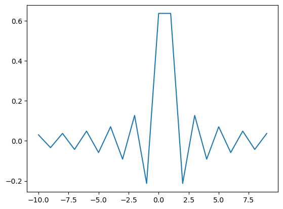

Cuvier’s beaked whale click#
For applying a matched filter to Cuvier’s beaked whale (Zc) clicks, a synthetic beaked whale click could be constructed according to
(4)#\[\begin{equation}
s(t)=A(t)\exp \{-2\pi i (f_0+f_m t)t\}
\end{equation}\]
where A(t) the signal amplitude is modeled according to
(5)#\[\begin{equation}
A(t)=(A_0 t)^\beta \exp \{- (A_0 t)^\gamma\}
\end{equation}\]
and where f0 = 30 kHz, fm = 60 kHz/ms, A0 = 13kHz, \(\beta=1.5\), and \(\gamma=1.5\) and t denotes the time vector.
The formula and parameters for the replica generation were chosen to fit an on-axis Cuvier’s beaked whale click.
The following script visualizes a nominal Zc click for suffucient high sampling frequency (say 192 kHz), so that the signal may be simulated directly.
import numpy as np
import matplotlib.pyplot as plt
def zcSig(tt,f0,fm,aa,bb,cc):
return (aa*tt)**bb * np.exp(-(aa*tt)**cc + 2*np.pi*1j*(f0+fm*tt)*tt)
fs=192 #kHz
ts=0.3 #ms
tt=np.arange(0,ts,1/fs)
f0=30
fm=60
aa=13
bb=1.5
cc=1.5
ss=zcSig(tt,f0,fm,aa,bb,cc)
plt.plot(tt,np.real(ss));
plt.plot(tt,np.abs(ss));
reduced sampling rate#
In case the sampling rate is less than the required bandwidth (say 96 kHz) the zc signal must also be downsampled (done properly with anti-aliasing filer)
import scipy.signal as signal
fs=768 #kHz
ts=0.3 #ms
tt=np.arange(0,ts,1/fs)
f0=30
fm=60
aa=13
bb=1.5
cc=1.5
xx=zcSig(tt,f0,fm,aa,bb,cc)
tx=np.arange(len(xx))/fs
plt.plot(tx,np.real(xx));
plt.plot(tx,np.abs(xx));
plt.show()
zz=signal.decimate(xx,8)
tz=np.arange(len(zz))*8/fs
plt.plot(tz,np.real(zz));
plt.plot(tz,np.abs(zz));
plt.show()
delayed signal generation#
import scipy.signal as signal
fs=192 #kHz
ts=0.5 #ms
tt=np.arange(0,ts,1/fs)
f0=30
fm=60
aa=13
bb=1.5
cc=1.5
ss=zcSig(tt,f0,fm,aa,bb,cc)
#see also http://www.labbookpages.co.uk/audio/beamforming/fractionalDelay.html#filter
def delay(xx,N,tau):
#tau = -4.5 # Fractional delay [samples].
n = np.arange(-N,+N)
# Compute sinc filter.
h = np.sinc(n - tau)
# Multiply sinc filter by window
h *= np.blackman(2*N)
# Normalize to get unity gain.
h /= np.sum(h)
uu=np.concatenate((xx,np.zeros(N,)))
yy=signal.lfilter(h,1,uu); yy=yy[N:,]
return yy
uu=np.concatenate((np.zeros(10,),np.real(ss)))
tu=np.arange(len(uu))/fs
N=10
dt=1
x0=delay(uu,N,0)
plt.plot(tu,x0,'.-')
x1=delay(uu,N,+dt)
plt.plot(tu,x1,'.-')
x2=delay(uu,N,-dt)
plt.plot(tu,x2,'.-')
plt.grid(True)
plt.xlim(0,0.35)


(0.0, 0.35)